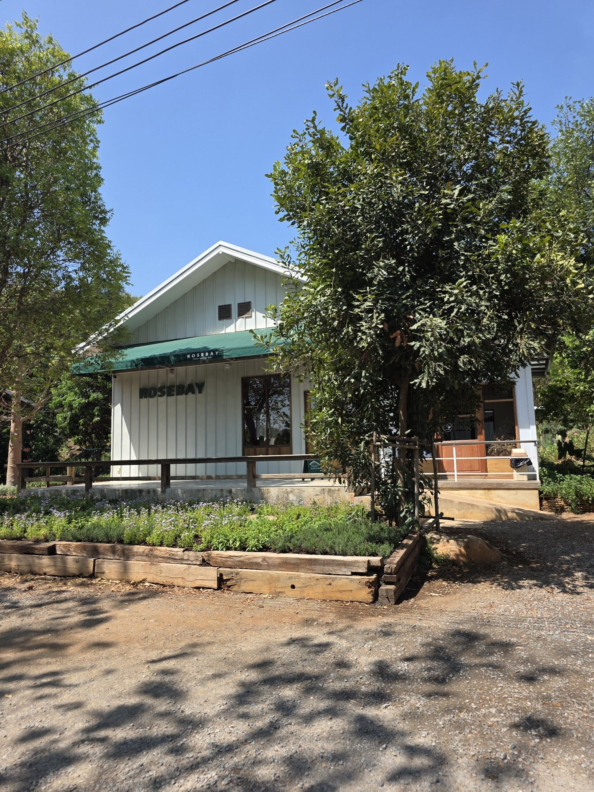
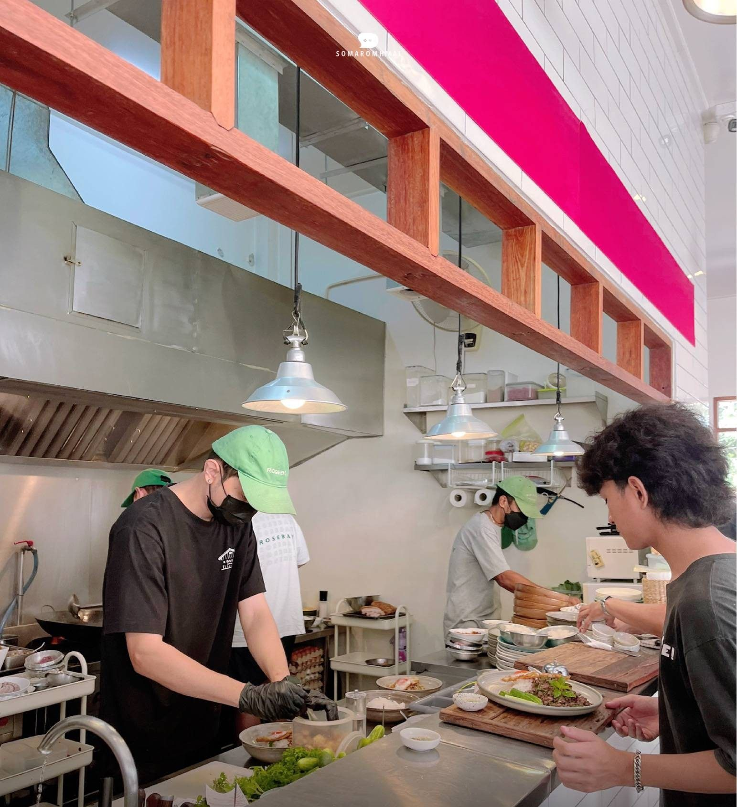
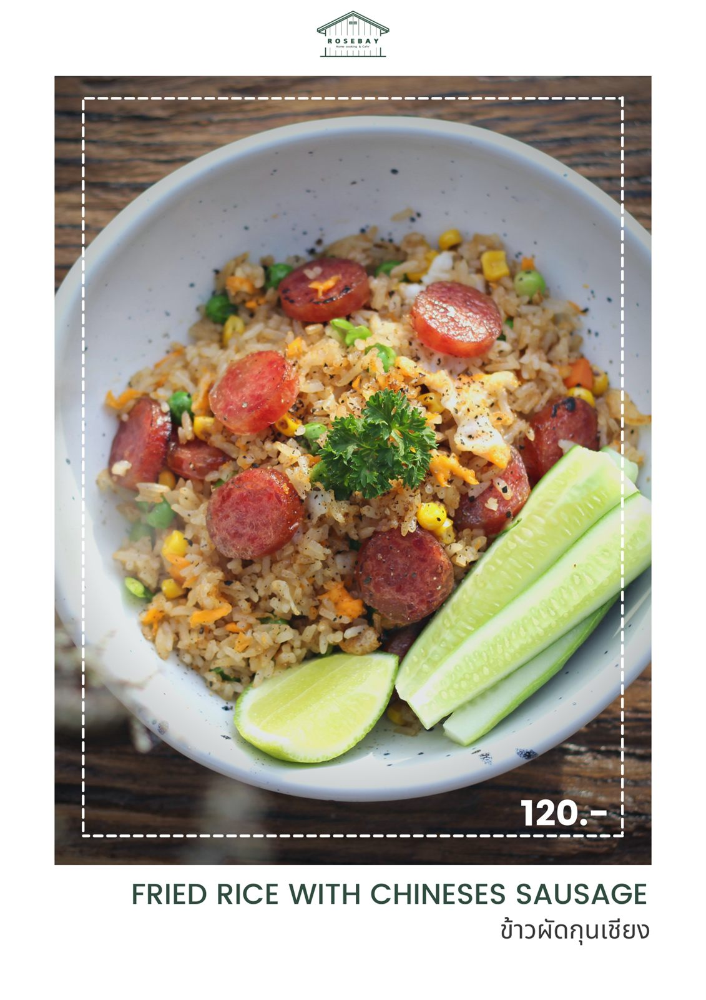
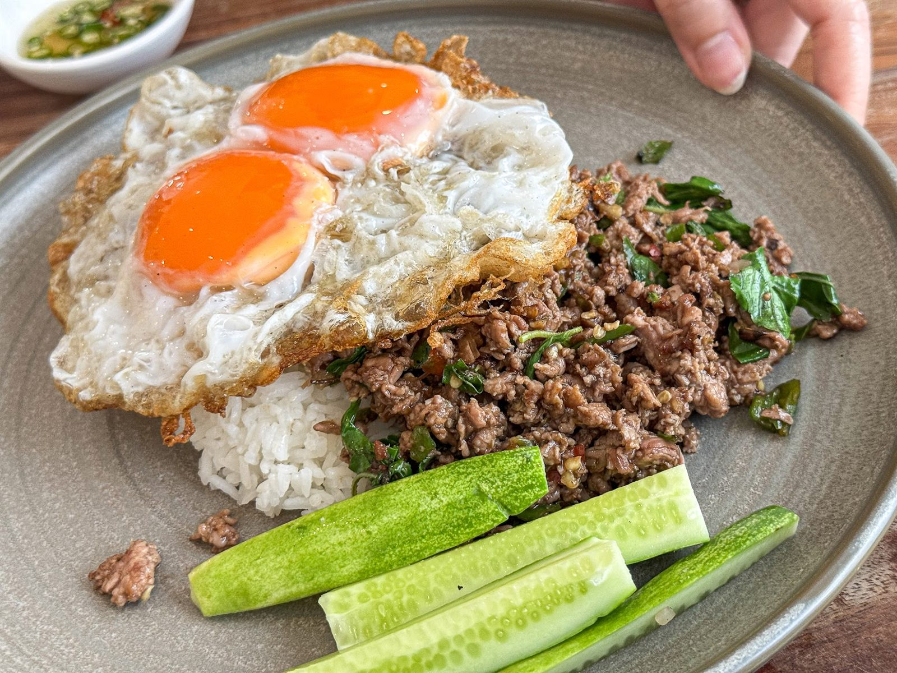
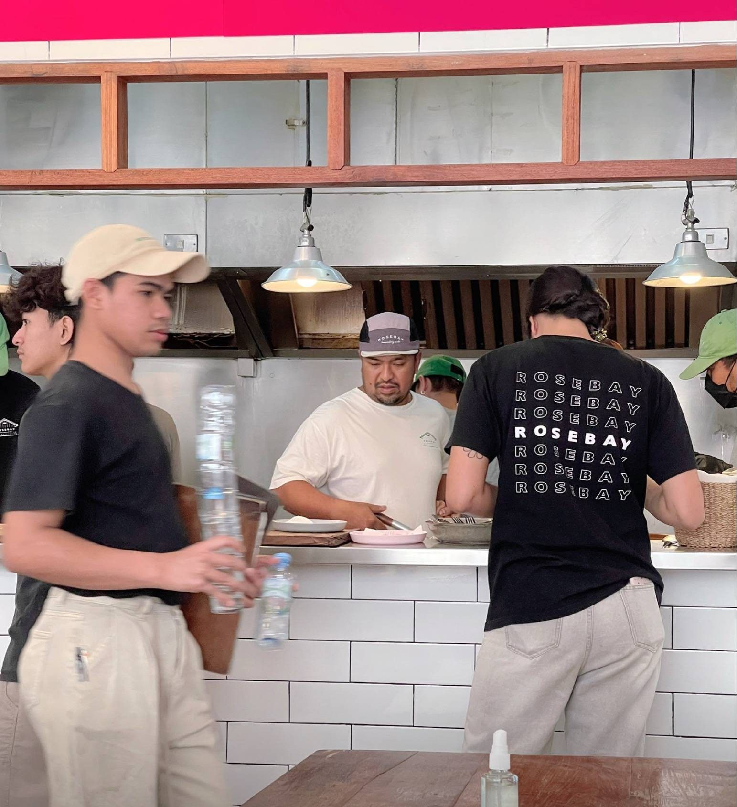
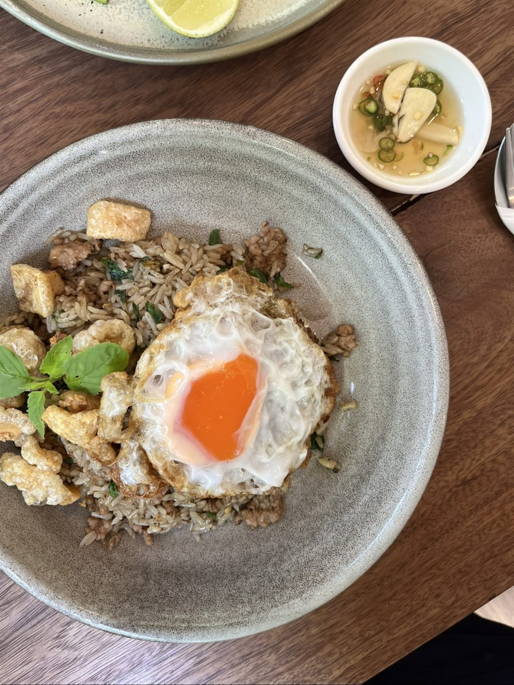
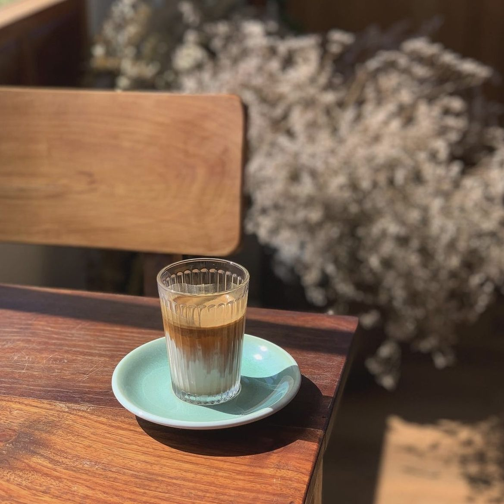

01
Kaprao, beef tenderloin
ข้าวกะเพราเนื้อสันในไข่ดาว/ไข่เจียว
Beef tenderloin, holy basil, chilli, fried dry. Fried egg or omelette on top.

Thai home cooking, coffee, and a little room to slow down — down a small soi off Thanarat Road.
Behind the white siding and the green awning is an open kitchen, in the middle of the room, with cooks working in front of you. The pan barely gets a rest. The plates are the ones you already know — kaprao, fried rice, garlic, eggs — cooked hard and served big.
Guests keep writing about the same thing: the smell of the pan.

ข้าวกะเพราเนื้อสันในไข่ดาว/ไข่เจียว
Beef tenderloin, holy basil, chilli, fried dry. Fried egg or omelette on top.
ข้าวกะเพราปูไข่ดาว/ไข่เจียว
Crab, and plenty of it — the plate guests write about most.
ข้าวผัดกะเพราคลุกหมูสับกากหมูไข่ดาว
The kaprao stirred through the rice, not spooned over it. Minced pork, crackling, fried egg.

ข้าวผัดกุนเชียง
Sweet Chinese sausage, rice that smells of the pan. The gentlest price on the menu.



The doors open at nine. After that the pan does not really cool down again.
Not hidden at the back. The kitchen sits in the middle, and you watch every plate being made.
Duck, not chicken. Fried until the edge is crisp and not oily, with the yolk still loose.
Order it at nine in the morning or three in the afternoon. It arrives the same either way.
The other half of Rosebay is a café. Coffee, matcha, lemongrass and mangosteen juice, and a chilled cabinet of sweets by the counter. Nobody moves you along.
Lunch first, coffee after. In that order.


The name puts two homes into one word: the owner's former family name, which means rose, and the bay in Australia where she first learned to cook.
In front of the building there are raised timber beds of herbs and vegetables that the kitchen actually picks from.


Pets are welcome. There is a dedicated outdoor zone, with fans and shade.
Rosebay has not published rules on breeds, carriers or indoor seating — please check with the team when you arrive.
Tap any photograph to open it · every picture here is Rosebay’s own
14.63048, 101.40451 · Plus code JCJ3+5R